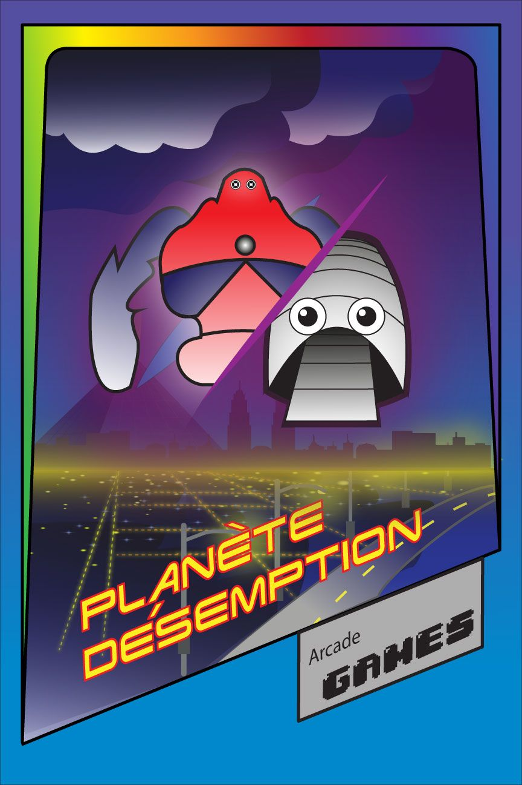

Planète désemption n'est pas qu'un simple jeu, c'est aussi une nouvelle facon de sensibiliser les gens au recyclage, à la récupération et à la consignation de bouteilles et de canettes.
Construite à partir d'anciens encarts publicitaires en coroplast, notre arcade est ainsi extrêmement recyclable à son tour. Nous voulions démontrer que réutiliser et recycler des choses est plus intéressant que simplement tout déposer dans son bac à recyclage vert
Bien sur, l'aspect le plus important de l'arcade : Comment y jouer ? C'est bien simple, il suffit d'entrer une bouteille ou une canette dans le réceptacle prévu à cet effet. Aucune monaie nécéssaire. Aucun jeton non plus.
Le jeu

Planète Désemption est un jeu d'arcade à monde ouvert avec une vue en première personne.
Situé dans un proche futur, Planète Désemption propose au joueur d'explorer la planète terre dans le scénario suivant : Qu'est-ce qui arriverait à la terre si nous ne faisons rien pour la sauver d'ici plusieurs années ? Le joueur explore des environnements qui sont affectés par les problèmes actuels reliés à la pollution, tel le smog, le réchauffement climactique, la fonte des glaces, les continents de déchets, et ainsi de suite.
Les ennemis rencontrés lors de l'aventure du joueurs sont des personnifications des différents problèmes reliés à la pollution. Vaincre ces ennemis revient à poser le geste qui remédie à ce problème de pollution spécifique. Par exemple, pour vaincre un monstre de smog, il faut trouver un moyen de purifier son air, ou de trouver la source des gaz à effet de serre qui se situe le plus proche afin de l'éliminer.
Cette approche permet aux joueurs d'êtres sensibilisés aux différents problèmes liés à la pollution et de faire des liens entre la réalité et le jeu
L'équipe
Sami El Arif
Conception et réalisation de l'affiche principale
Lyna Tang
Conception et réalisation des interfaces utilisateur et de la jouabilité
Marc Bouchard Caballero
Conception et réalisation des personnages
Olivier Fortier
Conception et réalisation des environnements
Mentions spéciales
Benoît Fortier
Pour ses outils indispensables et son aide pour obtenir les coroplasts.
Jennifer Prenda-Da Silva
Pour ses idées géniales, son aide pour peinturer les encarts et son soutient personnel constant.
Magalyi Fortier
Pour son aide à la peinture des encarts
Dominic Girard
Pour ses conseils, son enseignement, et surtout, parce qu'ils nous a laissés entreposer un paquet de choses dans son bureau et dans la salle des profs.